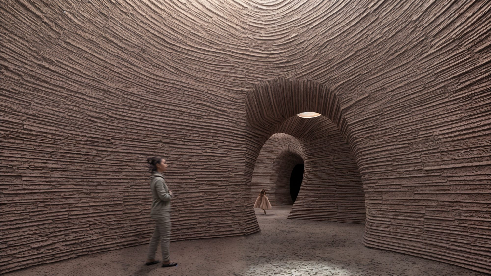
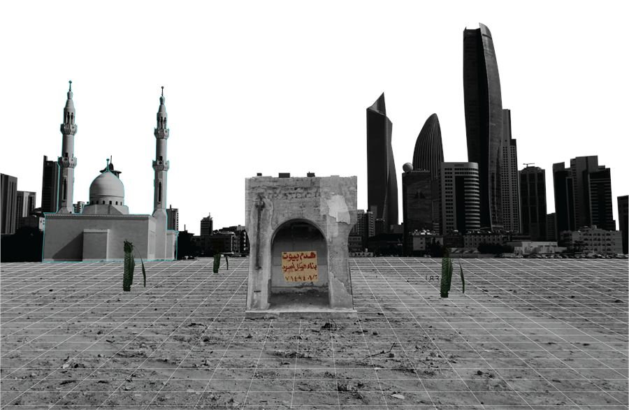
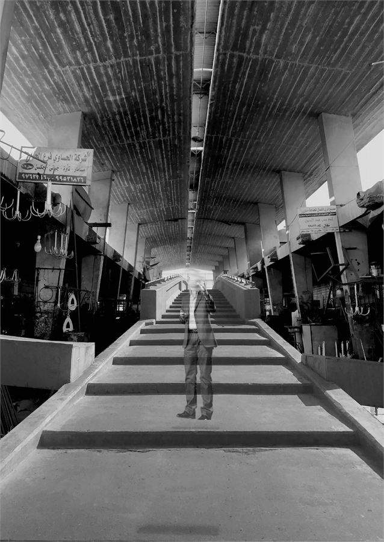
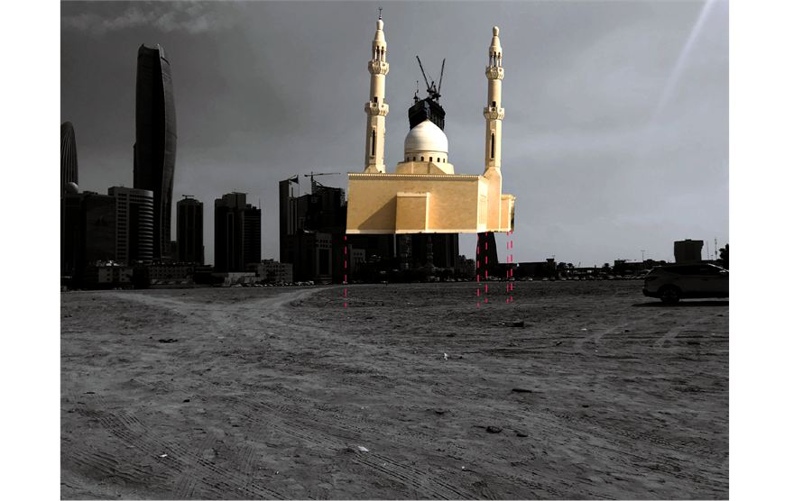
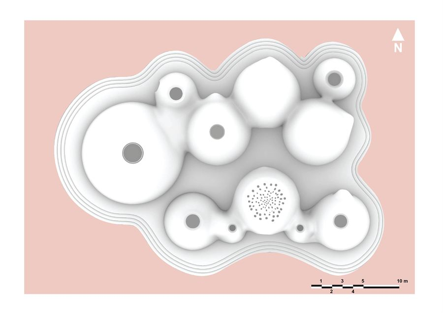
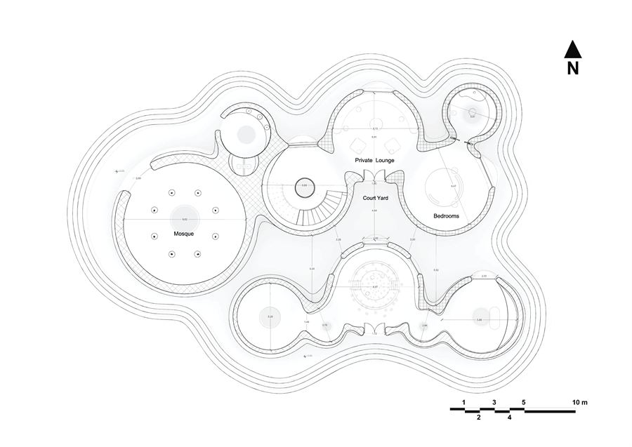
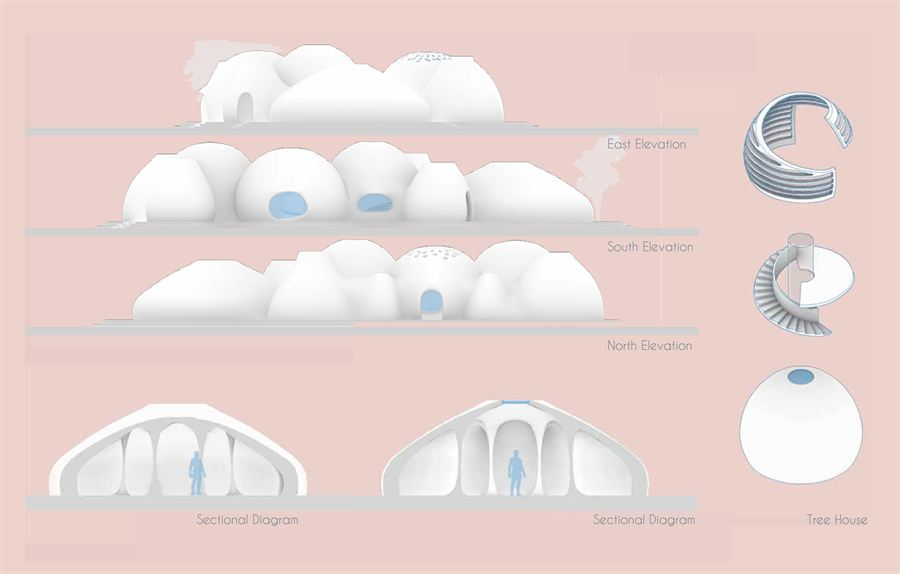
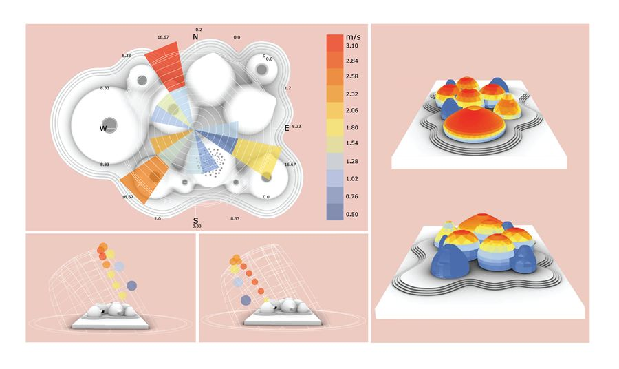
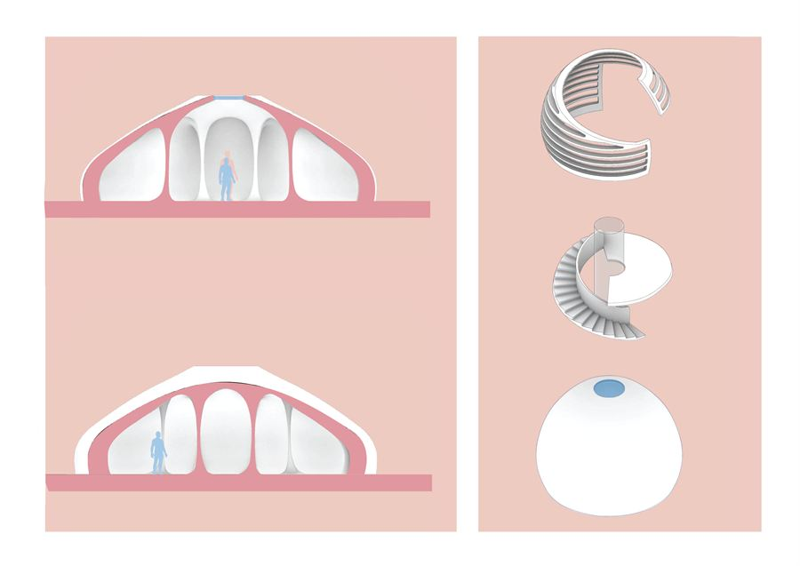
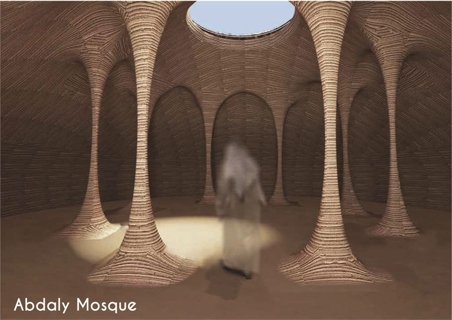

Shelter — Abdali Farmhouse
A rammed-earth prototype for Kuwait, designed to be built by the people learning to build it.

The project aims to set a prototype that exemplifies not only sustainable building, but demonstrates the beauty and honesty of vernacular natural building — and an interactive experience, as the structure would be erected by volunteers in a workshop setup where educators hand-to-hand build and teach vernacular building techniques.
Reading the city
The project was conceived through a deep visual reading of Kuwait's downtown, using photographic documentation and collage as tools to reinterpret its fractured urban identity. Themes of destruction, alienation, and the persistent condition of a tabula rasa became the central reflections driving the design.



A cluster of domes
The proposal responds through a triad of strategies: materiality rooted in clay, forms inspired by natural geometries, and a collaborative approach to making. The architectural language is organised around a series of dome typologies, each dedicated to a specific function. While individually distinct and spatially independent, the domes are welded together into a unified whole — the assembly of fragmented narratives into a cohesive collective form. The same logic continues inside: each interior has its own spatial character, yet all remain complementary, forming an interdependent spatial ecosystem.



Climate
Climate responsiveness is embedded in the design process. Careful studies of sunlight penetration guided the placement and shaping of openings, to ensure sufficient natural light while minimising heat gain. A combination of lighting and shading strategies, tailored to each dome, creates environments that are both comfortable and energy-sensitive in Kuwait's harsh desert climate.


Interiors
